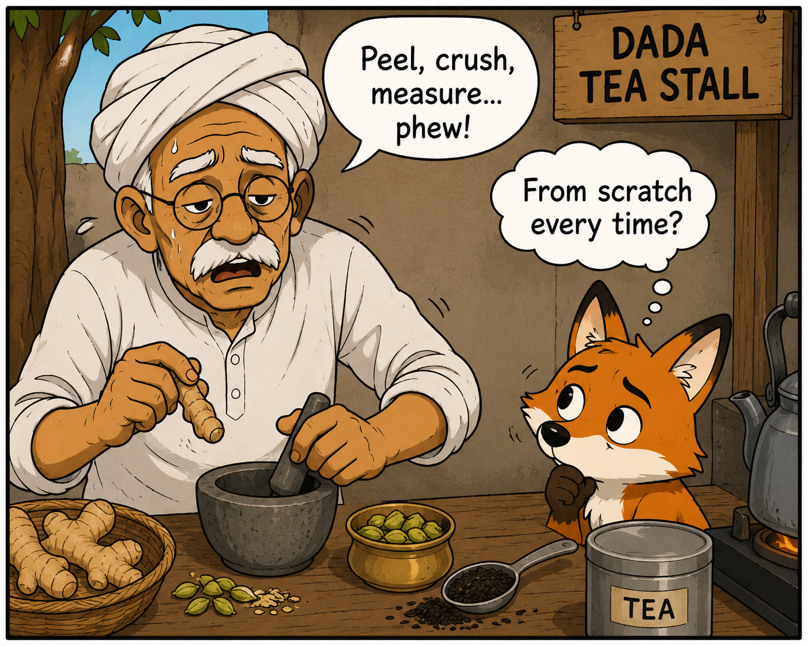
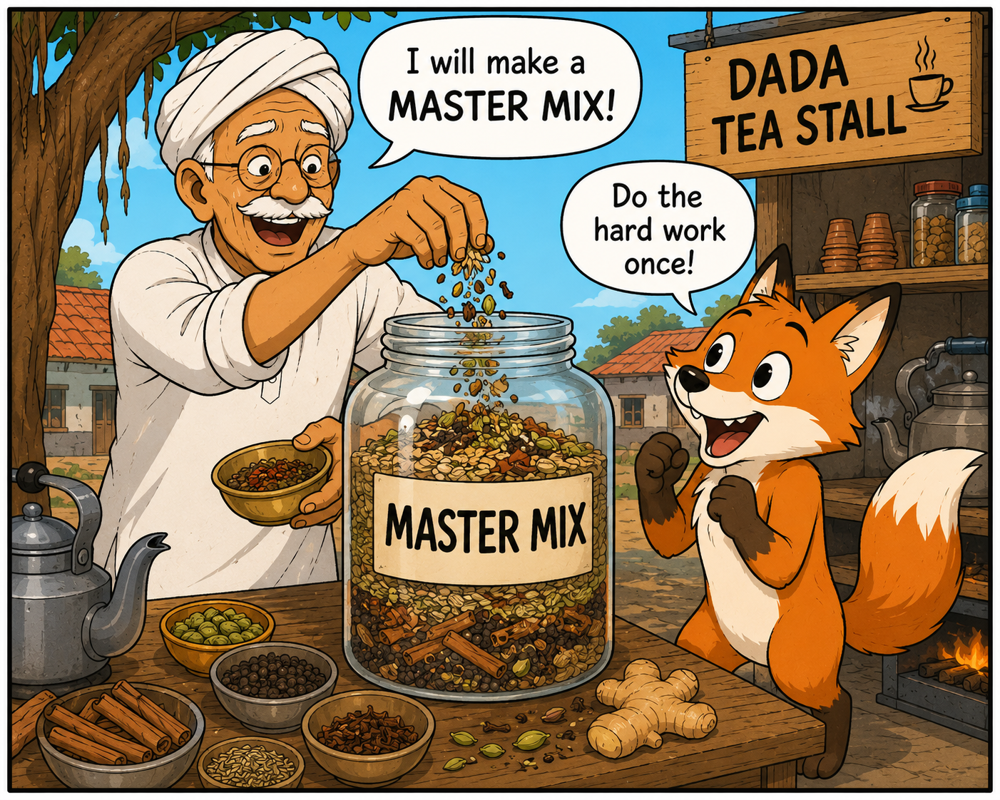
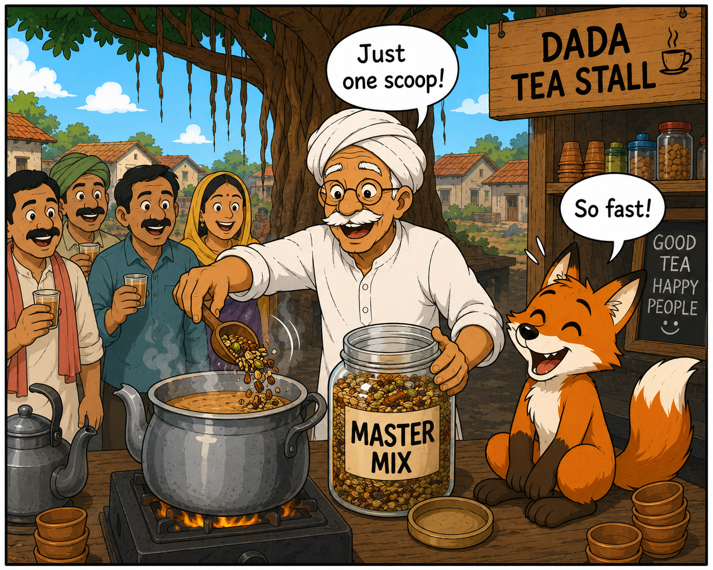
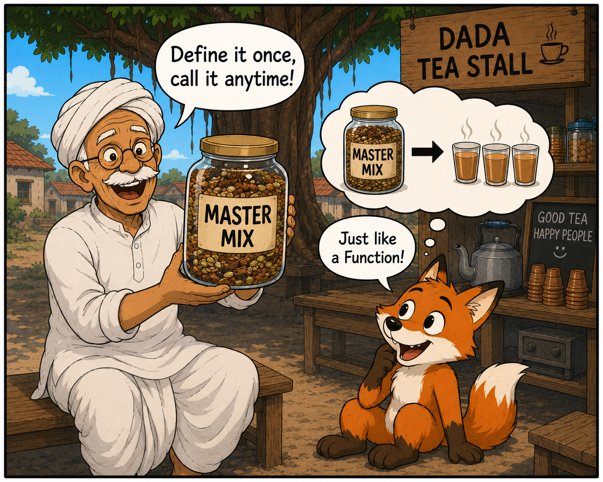

The morning sun rose, and the chai stall under the banyan tree in Gidderbaha was busier than ever.
A large crowd of villagers was waiting impatiently for their morning tea before heading to the fields.
Bunku the fox sat near the warm clay stove, watching Dada sweat. Making fresh pots of tea from scratch for the endless stream of people was exhausting and terribly slow!

Every time a new group of customers arrived, Dada had to do the exact same chores from scratch to brew a fresh pot.
He had to peel and crush the ginger, grind a cardamom pod, measure out the loose tea leaves, and add the sugar.
Repeating this long, messy, four-step process pot after pot was taking forever.

Dada decided there had to be a better way. The next morning, before the shop even opened, he tried a new idea.
He took a large glass jar and spent a few minutes grinding all the ginger, cardamom, tea leaves, and sugar together in perfect proportions.
He had to do the hard work once, but when he finished, he had a jar full of the perfect "Master Spice Mix".

When the morning crowd arrived, Dada didn't panic.
Instead of peeling and crushing spices from scratch, he simply took a few scoops of his Master Mix and dropped them directly into the large pot of boiling milk.
A perfect pot of chai was ready in an instant! Dada could now serve the whole crowd with just one quick motion.

Bunku watched as the massive line of villagers cleared out in record time.
He realized the brilliance of Dada’s trick: package a long, complicated set of steps into a single, ready-to-use mix.
You only have to prepare the mix once, but you can use it to do the hard work as many times as you want!
Pycrates: Functions
Bunku realized that if you have to do the exact same complex chore over and over, you shouldn't start from scratch every time! You can Define a Function (like preparing the Master Mix) to package the instructions together. Then, whenever you need to do the chore, you simply Call the Function (like dropping a scoop into the milk).
# 1. DEFINE the function (Make the mix) defmake_chai():
crush_ginger()
grind_cardamom()
add_tea_and_sugar()
# 2. CALL the function (Serve the crowd!) make_chai() # Cup 1 ready! make_chai() # Cup 2 ready! make_chai() # Cup 3 ready!
Pop Quiz!
1. In the story, Dada grinds ginger, cardamom, tea leaves, and sugar into a large glass jar before the stall even opens. In Python, what does this step represent?
By preparing the "Master Mix" in advance, Dada is grouping all the complicated steps together and giving them a name. In Python, this is called defining a function using the def keyword.
2. When the morning rush starts, Dada drops a single scoop of his Master Mix into the boiling milk to instantly make a cup of tea. What is this action called in programming?
Using the scoop to actually make the tea is the equivalent of "calling" or "executing" the function you previously defined. You are triggering the packaged instructions to do their job.
3. Ayush, Harith, and Keshav arrive at the tea stall together and order three cups of chai. Using his new method, how many times does Dada need to *define* the Master Mix, and how many times does he *call* it to serve them?
You only need to define a function once (making the jar of Master Mix). Once it exists, you can call it as many times as you need (using three scoops for three cups of tea).
4. Bunku the fox realized that Dada's new trick saved him from doing the exact same messy chores over and over again. What famous programming principle does this represent?
The DRY principle encourages programmers to package repetitive tasks into functions so they don't have to write the same lines of code from scratch every time.
5. What happens if Dada runs a tea stall the next day and wants to make the exact same type of tea?
One of the greatest powers of a function is its permanent reusability. Once defined, a function can be called over and over again, even on different days!